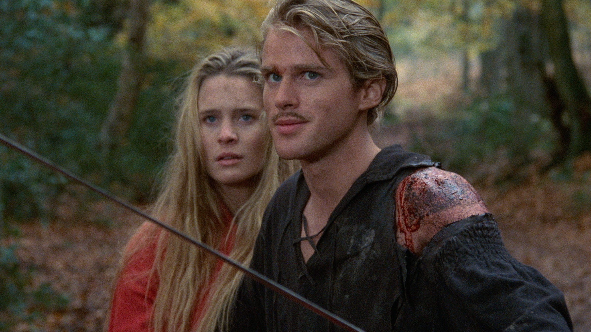
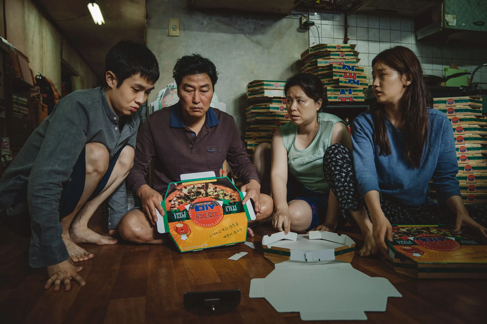

1. Which of the following is filmmaker Michael Bay known for?

2. In 'The Princess Bride' (1987), what does the acronym "R.O.U.S" stand for?
3. In 'Berserk, The Golden Age' (2012), what is the name of the group the protagonist joins?

4. In 'Krull' (1983), what is the cyclops' curse?

5. In 'Parasite' (2019), who is still hiding in the house at the end of the film?